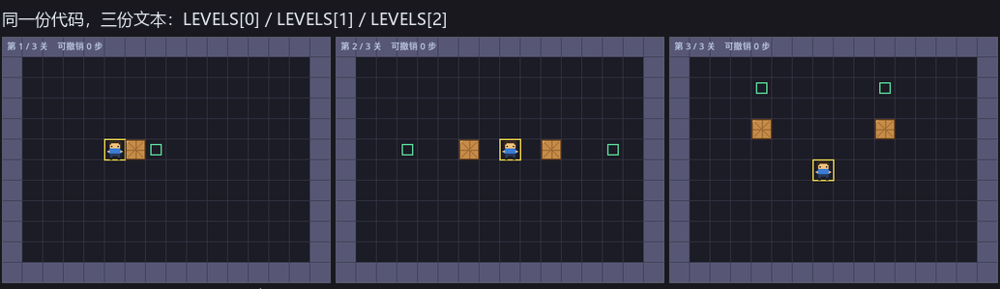
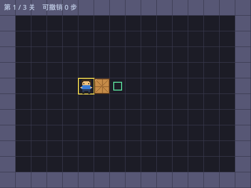
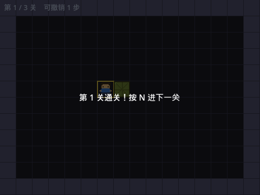
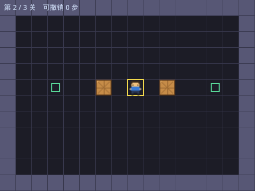
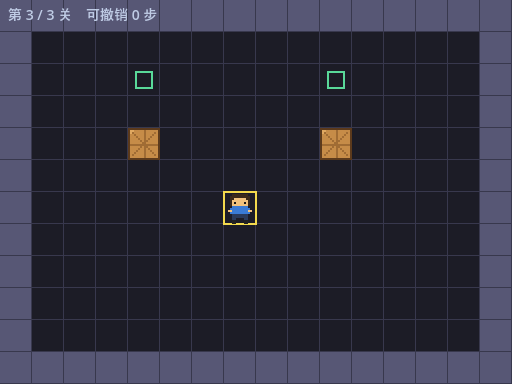
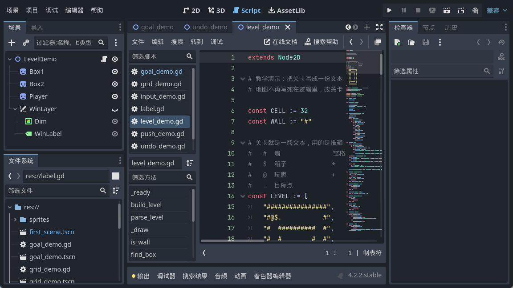
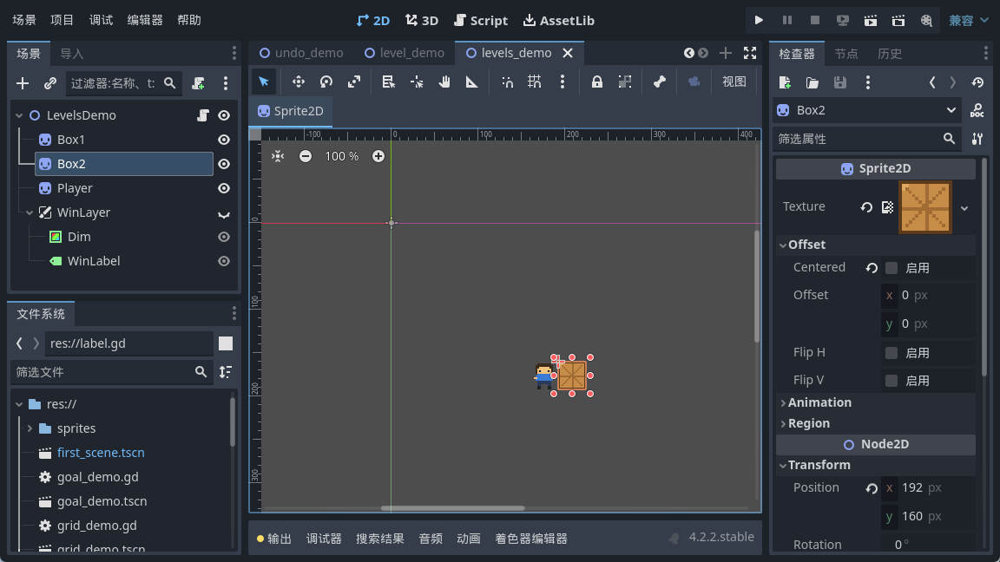

大家好，我是「山岚的运维笔记」。
上一篇将地图搬咗出代码，变成一份文本，改关卡唔使再郁代码。不过就得一关，通咗关就冇得玩。
今天多备两份文本，通关按 N 直接跳下一关。听落好顺，不过换关嗰一刻有两个坑等住你。
一份文本本来就是个数组，一行一个元素。那多关卡怎么办？再套一层就搞掂。
外面嗰层嘅第 0 项就系第一关，第 1 项就系第二关。就咁多，冇嘢喇。

三关难度是我排着来的：第一关推一下就赢，第二关两个箱子左右各推一个，第三关得绕到箱子底下往上顶。
写这三关的时候我干过一件蠢事：凭手感摆完就跑，结果第三关无论怎么推都差一格。后来学乖了，写完文本先拿脚本跑一遍求解器，确认它真能通关再往里填。推箱子这东西，摆错了就是死局，玩家推到一半才发现推不动，那体验很劝退。
关卡多了，得有个东西记住「现在在第几关」。一个整数够。
然后所有换关的动作都走同一个入口：换关是它，重开本关也是它。这么写不用维护两套逻辑，改一处两处都对。
跳下一关单独封一层，主要是放那个边界判断——已经到最后一关就没得跳了。这个判断别省，省了的话按到最后一关再按 N，直接数组越界报错。
呢个系我今日真正踩到嘅坑。
前面我们做了 Z 键撤销，每走一步往历史记录里压一份存档。问题来了——这份存档记的是上一个关卡的箱子坐标。
我实测了一遍：在第一关走一步，历史里有 1 条；按 N 切到第二关，要是没清，这 1 条还在。这时候你手贱按一下 Z，它会把第一关的箱子坐标写回第三关。画面上一半是这关的箱子、一半是上关的箱子，看着像渲染出了 bug，查半天查不到。
所以换关函数开头嗰句清空唔系洁癖，系必需嘅。

这个更隐蔽。
移动是用补间动画摊到 0.12 秒跑的，你要是在小人还在半路上就按 N，那个补间不会因为你换了关就自己停。
我做了个对照实验：给一个精灵起个补间往 x=300 走，1 秒到；走了一半我把它挪到新位置，然后等 0.5 秒再看——位置变成了 (148.18, 101.21)。
既不是我新设的位置，也不是终点。它在按老目标继续算插值，把新位置整个盖掉了。
解决办法是把补间存成变量，换关前掐掉。0.12 秒好短，正常玩唔容易撞到，但「唔容易撞到」嘅 bug 先最烦——上线三个月之后有人同你讲，个箱偶尔会飘，你估我点知。
通关面板上那句话得看情况变：最后一关说「全部通关」，前面的说「按 N 进下一关」。
这里有个减一要留神：数组从 0 数，关号从 1 数，这两个数永远差 1。我喺呢种地方栽过嘅次数，唔会比数组越界少。

按 N 跳到第二关，箱子从一个变成两个，目标点也换了位置，上一关的东西一点没留。


最后再按一次 N，画面纹丝不动。我把前后两张截图做过像素比对，0 个像素不同，说明最后一关的边界判断生效了。


这篇真正值钱的不是「数组套数组」，那个你一想就通。值钱的是换关那两个坑：换关不是换个关卡号就完事，凡是跨关还活着的东西，都得挨个点名。
数据类嘅要清，动画类嘅要掐，显示类嘅要收埋。
现在能一关一关往下推了。仲有个问题：关咗游戏再开返，又由第一关开始，通咗几关冇人记得。下一篇做存档，把通关进度写进文件。
三关推得落喇，点赞加在看撑下我；想睇存档点做，关注「山岚的运维笔记」，下一篇接着写。评论区吹水。